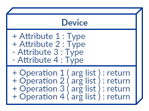
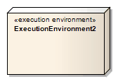
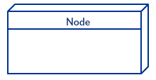

Here is some information about basic symbols that are used in a class diagram. While on the previous page you could see that our connecting lines didn't have any arrows, it's because we haven't talked about the arrows yet! Below explains the different types of class relations, which are typically reflected in the connecting lines between classes. There are others, but these are the most commonly used.
Devices
Deivce is a phardware component are drawn as a box. Think of Application servers.

Communication Association
The solid line represents the path of the two nodes communicating. The line can indicate the url path or port number to that node.
Artifacts
An artifact is typically a file containing software running on a device. It represents the elements that are caused by a development process.
Execution Environments
This where systems can host another software or how the software will execute. It is the area where components can be deployed as an executable. One example is the operating system.
Node
There are many different types of dependencies, so we'll just cover a common dependency class. A common one is "realizes" or realization class, which represents an interface of some kind.